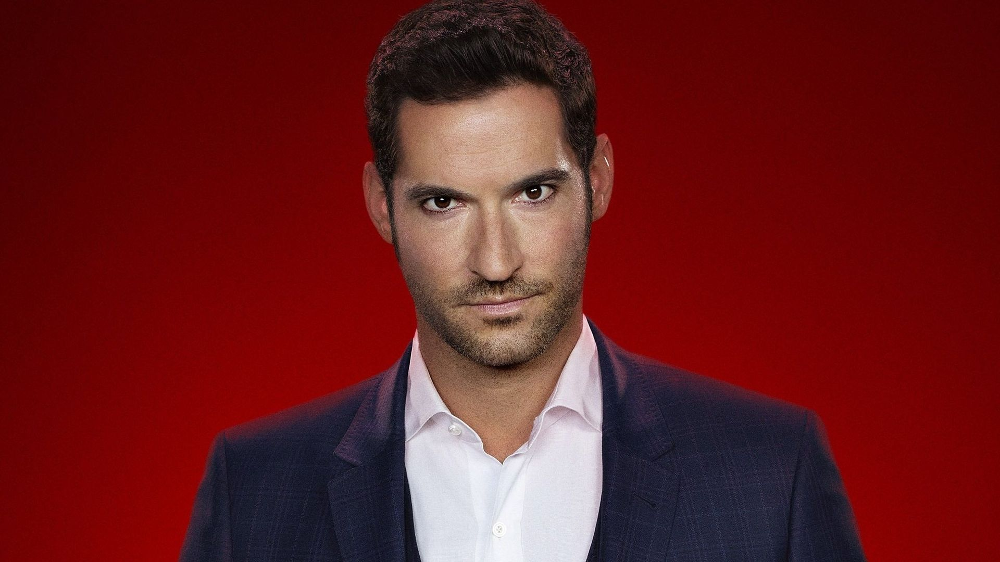

INTRIGUE
Lassé d'être le « Seigneur des Enfers », Lucifer Morningstar abandonne son royaume et s'en va à Los Angeles où il est propriétaire d'une boîte de nuit appelée « Le Lux ». Lucifer a reçu le don de contraindre les gens à révéler leurs désirs les plus profonds. Un soir, Lucifer assiste au meurtre d'une chanteuse pop devant son club. Il décide donc d'aller à la recherche du coupable et croise sur son chemin une policière nommée Chloe Decker qui résiste à son don et lui met des bâtons dans les roues.
Pendant que Lucifer Morningstar et Chloé Decker font équipe pour trouver le meurtrier, Dieu envoie l'ange Amenadiel sur Terre pour convaincre Lucifer de revenir régner à nouveau sur l'Enfer. Mais il échoue.

Lucifer / Tom Ellis
Lucifer Morningstar dans la série "Lucifer" est un ange déchu qui a quitté le royaume des Enfers pour vivre à Los Angeles. Il possède un nightclub et s'ennuie de son rôle de Seigneur des Enfers. Charmeur, sarcastique et doté de pouvoirs surnaturels, Lucifer trouve un nouveau but en aidant la police à résoudre des crimes, tout en naviguant entre son héritage céleste et sa fascination pour le monde humain. Son personnage évolue entre l'humour décalé et des moments plus sombres au fil de la série.
Chloe Decker / Lauren German
Chloe Decker dans la série "Lucifer" est une détective de la police de Los Angeles. Elle est pragmatique, dévouée à son travail et possède un fort sens de la justice. Chloe devient le centre d'intérêt de Lucifer Morningstar, et leur partenariat évolue au fur et à mesure de la série. Son caractère équilibré et son empathie font d'elle un contrepoids important pour les aspects plus excentriques de Lucifer, et leur relation complexe ajoute une dimension intrigante à l'intrigue.
Mazikeen / Lesley-Ann Brandt
Dans la série "Lucifer", Mazikeen, surnommée Maze, est un démon et ancienne tortionnaire en chef de l'Enfer. Au fil de la série, elle s'émancipe de son rôle infernal et explore sa propre identité à Los Angeles. Maze se lie d'amitié avec les autres personnages principaux, en particulier avec Linda, la thérapeute de Lucifer. Elle recherche constamment son but et son humanité, tout en affrontant les défis de sa nature démoniaque. Maze est une combattante féroce, mais son développement émotionnel et son désir de trouver sa place dans le monde humain sont des aspects clés de son personnage.